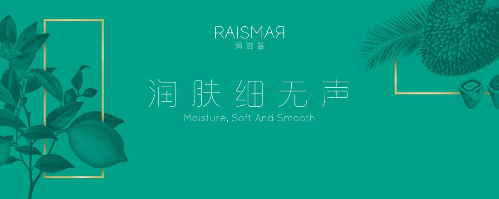

企业简介
贝诗特一直致力于纯天然无毒、无辐射矿植物在日化领域的应用研究，2008年开始与美国俄亥俄州立大学的Leong ManLoong、英国赫尔大学的Ching Sing Min博士合作建立“植物微粒”实验室。投入巨额资金和人才从事＂植物微粒＂护肤品和日用洗涤用品领域的应用研究，经过8年的潜心研发，该技术的工业化生产研究实验获得巨大成功。
2014年，天然植物、矿物质提取物的原料生产基地在马来西亚配套建设完成。2015年，全国深呼吸第一小城福建将乐，与本项目配套的占地100亩的现代化生产基地正式投产。润滋蔓是贝诗特旗下专注于纯天然“植物微粒”护肤品研发、生产、营销的时尚品牌，品牌运营总部落户于厦门美丽的五缘湾畔。
品牌故事
这是一个没有传奇，也不浪漫的故事，它纪录的只是在17岁时就离家闯天下的润滋蔓品牌创始人与植物微粒结缘的心路历程。
2008年9月，美国俄亥俄州立大学举办的＂天然化妆品和洗涤剂的应用研讨会＂上，润滋蔓品牌创始人与俄亥俄州立大学专家LeongManLoong先生一见如故，少年时的梦想在遥远的大洋彼岸照进了现实。他被LeongManLoong历时十来年潜心研究的“植物微粒”项目深深震撼，一星期之后，就达了合作意向。
从2008年首期投入资金合作组建“植物微粒” 工业化生产应用研究实验室，到2013年，五年期间已经花费了巨额研究经费，而实验还未能取得关键性进展。实验项目陷入迷茫之中。2013年夏季，他和Leong Man Loong先生决定暂停研究，去马来西亚度假。在天堂一样的小岛卡帕莱，全身心的放松让困挠已久的问题茅塞顿开，匆匆结束休假，他们当晚就乘机飞回美国。第二天，全体研究人员进驻实验室封闭式研究。两个月后，“植物微粒”项目获得突破性成果。
这是一项自然与科技完美结合的创举，是梦想与现实的深度契合。他一直庆幸自己始终怀着那个简单而美丽的梦想，一路前行初心不改。翻开“润滋蔓”商标注册证，他的心中浮现的是十七岁离家时闽北小城的灯光，是美国实验室里亿万次披星戴月的计算，是国际航班上的漫长旅程，是失败中的等待与守望，是爱在润物细无声中潜滋暗长，世间所有美好事物的养成无不是这样，润滋蔓亦如是。。。。。。
品牌文化
创造全程绿色的护肤品产业链全球卓越品牌
为绿色生活时尚，奉献我们毕生的智慧与深情
感性价值：我们是绿色生活的守护者
理性价值：我们是绿色革命的实践者
象征价值：我们是绿色文明的传播者
地球家园，让我们用心守护，用爱耕耘
纯天然矿植物提取
全过程绿色无污染
全球引领微粒技术
心系润滋蔓，以诚，以柔，以默
闽北小城三月天，扑面而来杏花春雨的清新、明媚
马来西亚夏日，黄昏绿松石般澄澈迷人的秘境小岛的清澈、热情
润滋蔓采撷自大地、溪流、阳光，在岁月里潜滋暗长
从人到土地，从土地到人
从东方到西方，从《诗经》到《圣经》
从辗转反侧到恒久忍耐
爱与智慧，成就最美的时光之礼